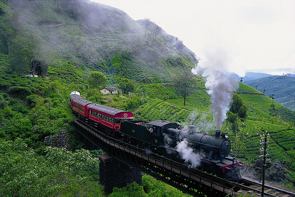
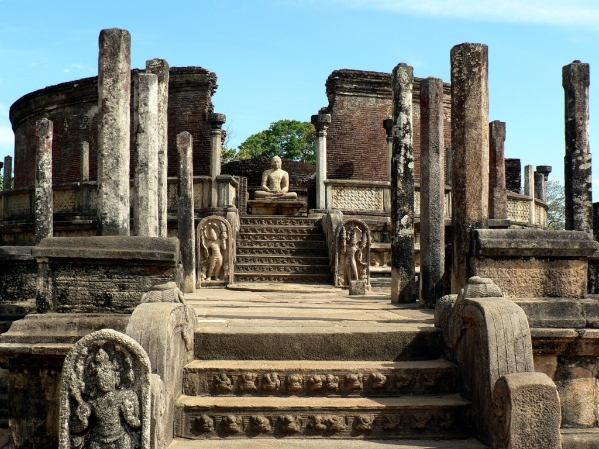
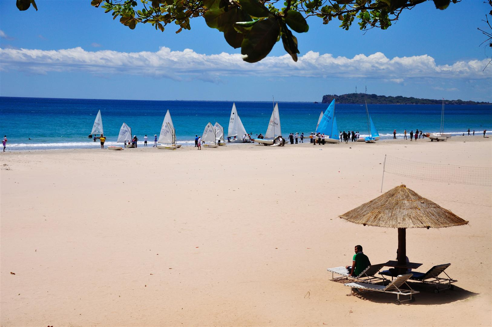

Anuradhapura

Bambarakanda

Nuwara Eliya

Polonnaruwa

Trincomale
Anuradhapura
Bambarakanda
| Resturent | Phone |
|---|---|
| {{friend.name}} | {{friend.phone}} |
Nuwaraeliya
Trincomale
Trincomalee is a port city on the east coast of Sri Lanka. The city is located on a peninsula, which divides the inner and outer harbours.Trincomalee is an anglicized version of the Tamil word Tirukonamalai (which means "lord of the sacred hill"); it is a hill situated in the end of a natural land formation that resembles an arc. It is one of the main where Tamil is spoken at large scale. Historically referred to as Gokanna or Gokarna it has been a sea port that has played a major role in maritime and international trading history of Sri Lanka.
The Bay of Trincomalee provides security and is openly accessible to all types of sea crafts in all weathers. The beaches are used for recreational purposes such as surfing, scuba diving, fishing and whale watching. The city is renowned for housing the largest Dutch fort in Sri Lanka. It is home to major Sri Lankan naval bases and a Sri Lankan Air Force base.
Read More
Polonnaruwa
Kings ruled the central plains of Sri Lanka from Polonnaruwa 800 years ago, when it was a thriving commercial and religious centre. From here, free-marketeers haggled for rare goods and the pious prayed at any one of its numerous temples. The glories of that age can be found in archaeological treasures which give a pretty good idea of how the city looked in its heyday. You'll find the archaeological park a delight to explore, with hundreds of ancient structures – tombs and temples, statues and stupas – in a compact core. The Quadrangle alone is worth the trip. That Polonnaruwa is close to elephant-packed national parks only adds to its popularity. And the town itself makes a pleasant base for a day or two, fringed by a huge, beautiful tank with a relaxed ambience.
Read More